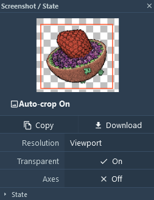
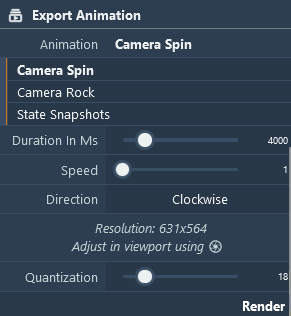
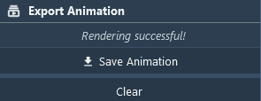
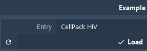
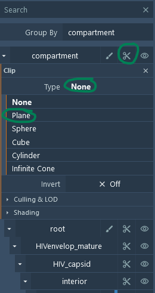
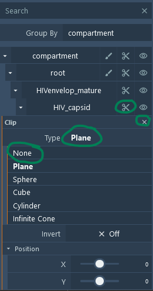

Images/Movies
Images & Movies
An important functionality of Mol* and the explorer is the preparation of publication-ready outputs - images or animations
Images

Clicking on the toggle Menu in the central top corner you can select the properties of the Image output via  . Output image properties can be later selected - Cropping, Resolution (from Viewport, to UltraHD 3840x2160), Transparence, and presence of axes. Other Settings about views such as Camera, Ligthning and Clipping can be set in Viewport Settings/Control
. Output image properties can be later selected - Cropping, Resolution (from Viewport, to UltraHD 3840x2160), Transparence, and presence of axes. Other Settings about views such as Camera, Ligthning and Clipping can be set in Viewport Settings/Control
Movies
It is also possible to export animation to mp4 format. Clicking on the Control Panel next to to the Export Animation. Select animation type and time properties and finally click on the button Render.

Once the animation is done rendering click the button Save Animation to download the mp4 file.

Spinning (or Rocking) HIV
Guide for creating spinning (or rocking) virus videos:
- Load structure(s)
- Adjust visual style & coloring
- Export camera spin (or rock) animation video
Here is a rendition of a rocking HIV:
Step-by-Step Guide
To export a rocking HIV video:
-
In the Example panel, select the entry CellPack HIV and click the Load button.

-
Clip the virus: In the right panel, click the clip icon at the compartment top level. In the new widget that appears, click the Type drop-down and select Plane.

-
Unclip the capsid: In the right panel, click the clip icon at the HIV_capsid level. In the new widget that appears, click the Type drop-down and select None.

-
Go to the Export Animation panel.
- Pick the "Camera Spin" (or "Camera Rock") option.
- Optionally, open screenshot settings to adjust the resolution.
-
Click "Render".
-
Wait until the "Save Animation" button appears.
-
Enjoy and share.
State Snapshots
See the Make a Tour guide to create the snapshots. Once you have all your snapshots ready:
- Go to the Export Animation panel.
- Pick the "State Snapshots" option.
- Optionally, open screenshot settings to adjust the resolution.
-
Click "Render".

-
Wait until the "Save Animation" button appears.
-
Here is an example rendered from the CellPACK HIV tour.
Final Notes
- Movie rendering and export are done entirely in the browser. Your data stays on your machine.
- View the states online: